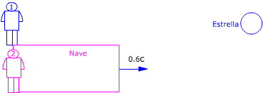

|  Observador 1 (Tierra): $$\Delta t_1=\frac{L_1}{v}$$ Este tiempo no es propio porque la nave no está en la misma posición al principio que al final Observador 2 (Nave) Aplicando la conversión de tiempos: $$\begin{aligned} &\Delta t_1=\frac{\Delta t_2}{\gamma}\;\rightarrow\;\frac{L_1}{v}=\frac{\Delta t_2}{\gamma}\\[6pt] &\Delta t_2=\gamma\,\frac{L_1}{v}\\[6pt] &\Delta t_2=\sqrt{1-\left(\frac{0{,}6\,c}{c}\right)^{2}}\ \frac{1\ \mathrm{a}\cdot c}{0{,}6\,c}=1{,}33\ \mathrm{a} \end{aligned}$$ |